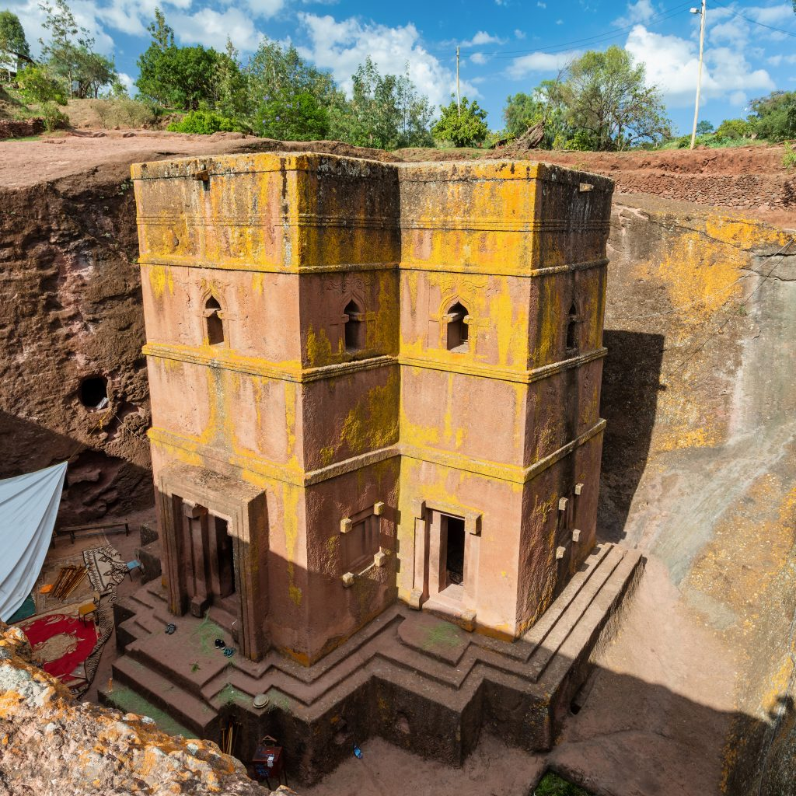
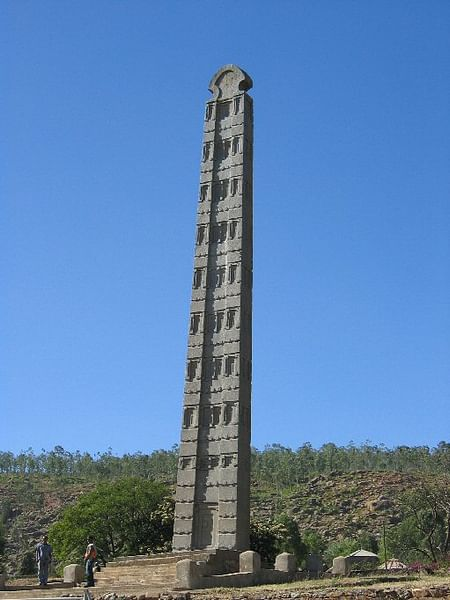
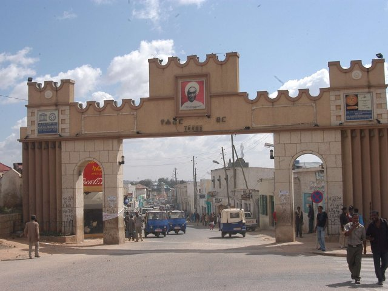
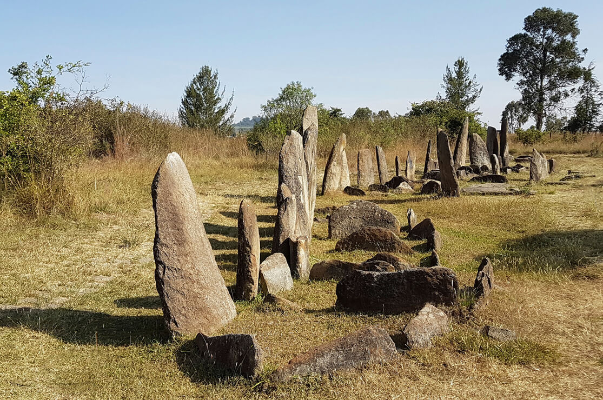
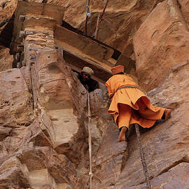
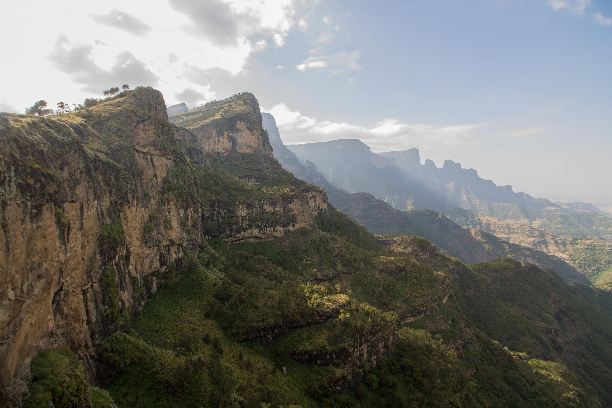
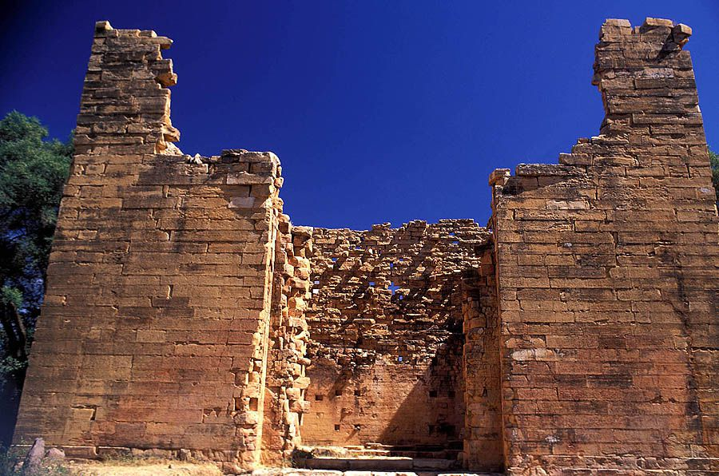
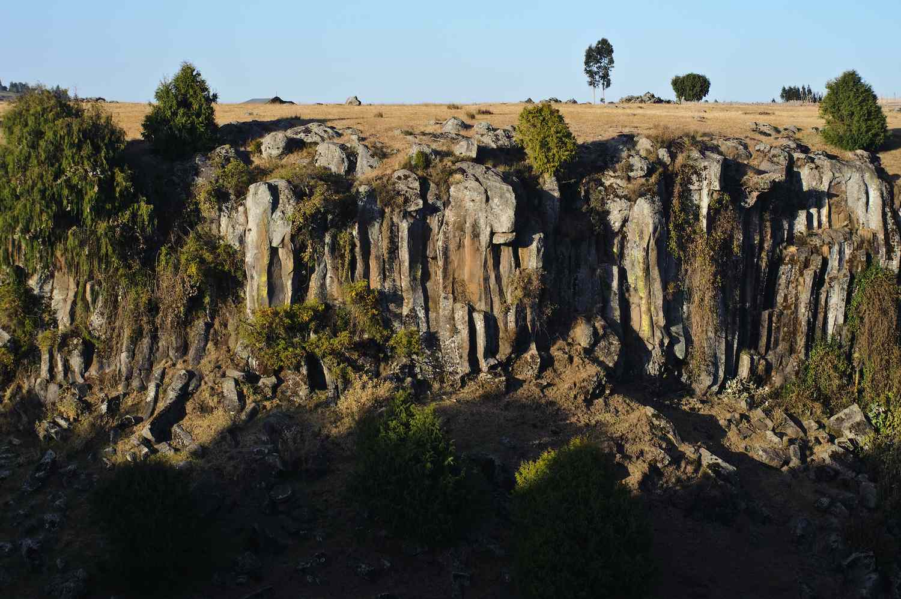
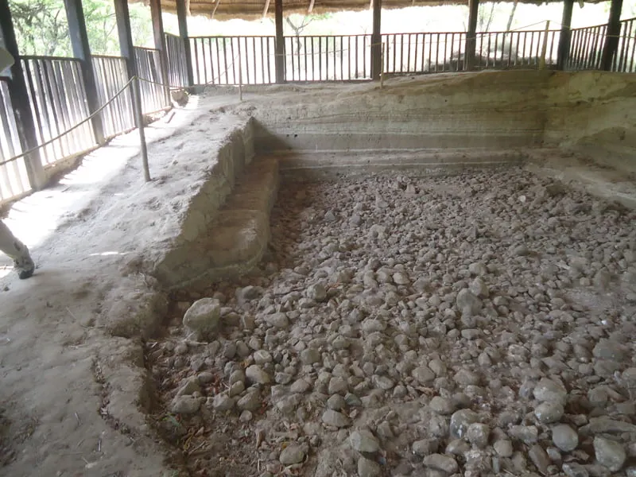

Lalibela is one of Ethiopia’s most famous historical and religious sites, known for its 11 monolithic rock-hewn churches dating back to the 12th century. These churches were carved entirely out of solid rock and remain an important pilgrimage site.
What to see:
- Bete Giyorgis (Church of Saint George), the most iconic rock-hewn church shaped like a cross.
- Intricate carvings and ancient frescoes inside the churches.
- Annual Timkat (Epiphany) celebrations.

Once the heart of the Aksumite Empire, Axum is famous for its obelisks, ancient tombs, and as the legendary resting place of the Ark of the Covenant.
What to see:
- The Obelisk of Axum, a 24-meter-tall granite stele.
- The Church of St. Mary of Zion, believed to house the Ark of the Covenant.
- Ancient royal tombs of Aksumite rulers.

Gondar was the 17th-century capital of Ethiopia and is renowned for its castle complex, built by Emperor Fasilides and his successors.
What to see:
- Fasil Ghebbi (Royal Enclosure), featuring several castles.
- Debre Berhan Selassie Church, known for its stunning ceiling frescoes of angelic faces.
- Fasilides’ Bath, a site for the Timkat festival celebrations.
Harar is an ancient city famous for its narrow alleyways, vibrant markets, and Islamic heritage. It is considered the fourth holiest city in Islam.
What to see:
- Harar Jugol, with over 82 mosques and 100 shrines.
- Hyena feeding ritual, a unique cultural experience.
- Arthur Rimbaud’s House, a museum dedicated to the French poet who lived in Harar.

Arthur Rimbaud’s House, a museum dedicated to the French poet who lived in Harar.
What to see:
- Over 40 monolithic stelae engraved with symbols.
- Theories suggest they are linked to ancient burial practices.

Located on a remote cliff, Debre Damo is one of the oldest monasteries in Ethiopia, dating back to the 6th century.
What to see:
- The rope climb to the monastery, as it is only accessible by scaling a cliff.
- Ancient manuscripts and religious artifacts.
- Stunning mountain views surrounding the monastery.

While primarily known for its natural beauty, the Simien Mountains also hold historical significance, as they were once home to Ethiopian royalty.
What to see:
- Ras Dashen, Ethiopia’s highest peak.
- Gelada baboons, unique primates found only in Ethiopia.
- Ruins of ancient settlements in the highlands.

Yeha is the site of Ethiopia’s oldest standing structure, dating back over 2,500 years. It is believed to be connected to the ancient Sabaean civilization.
What to see:
- The Great Temple of Yeha, built from massive stone blocks.
- Nearby monasteries preserving ancient Ethiopian history.

Though primarily a natural wonder, Bale Mountains also host historical cave dwellings used by ancient Ethiopian civilizations.
What to see:
- Sof Omar Caves, one of the largest cave systems in Africa.
- Wildlife, including the Ethiopian wolf.

Melka Kunture is one of the most important archaeological sites in Ethiopia, with evidence of early human habitation dating back over a million years.
What to see:
- Excavated prehistoric tools and fossils.
- A museum showcasing Ethiopia’s early human history.
